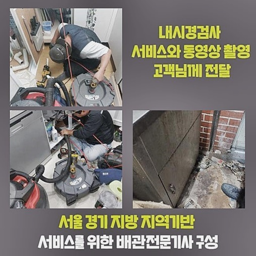
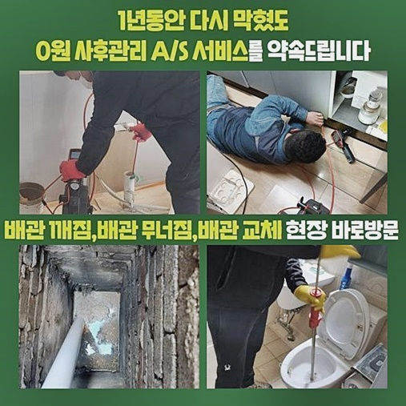
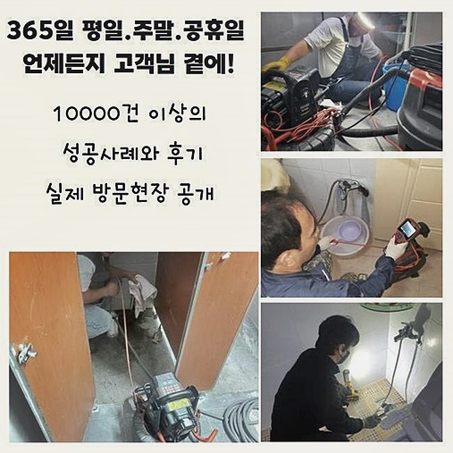
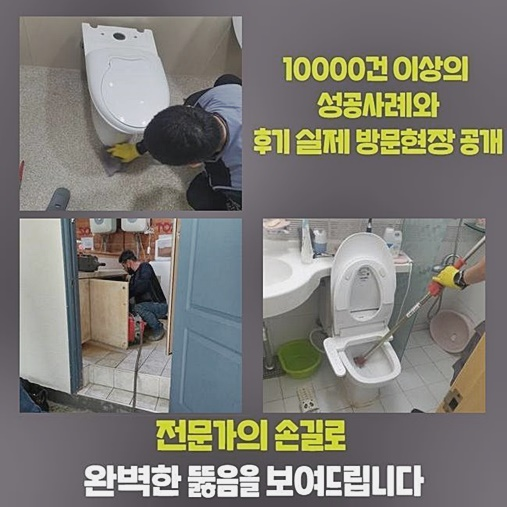
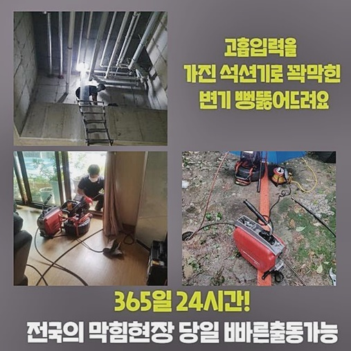
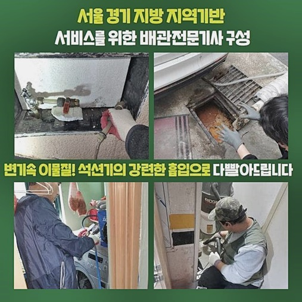

🏠 동두천 걸산동 오수관막힘 상봉암동 하수구뚫어주는업체 배관공사
용인시 처인구 배관막힘 전문 시공 후기

📋 작업 개요
- 위치: 용인시 처인구, 수원시 영통구, 화성시 동탄
- 서비스 유형: 배관막힘, 고압세척, 내시경점검
- 작업 일시:
- 업체명: 하수구수사대 (010-5615-2118)
🔍 문제 상황
인사올립니다
하수관 막힘의 문제 구역이라면 어디든지 마음놓고 현장으로 가는 배수구막힘 팀입니다
지난달에 의뢰인이 다용도실내부 하수파이프에 장애가 생겼다고 요청이 와서 문제공간에 방문드렸습니다
동두천 걸산동 오수관막힘 상봉암동 하수구뚫어주는업체 배관공사
배수가 전혀 이뤄지지 않으면서 냄새까지 퍼지게 되어 빠르게 저희 배관문제 해결사에게 도움을 요청하셨습니다
저희 수리업체는 관련 작업장에 방문해서 배수가 안되는 이슈의 근원을 파악하고 말끔히 해소하여 드렸어요
어떤 단계를 거쳐 물막힘의 근원을 발견해서 수리했는지 함께 살펴보며 설명드리겠습니다
혹여라도 똑같은 상태에 직면하신다면 동요하지 말고 이제 살펴볼 정보를 숙지하면 좋을 듯 합니다
저희 수리업체가 찾아간 장소는 주거지역으로 의뢰인 댁의 다목적실에 세탁기 배수관이 막힘이 생겼다고 설명하셨는데요
고객의 말을 듣고 문제지점을 조사해보니 심한 악취와 더불어 구정물까지 역류하는 상태였습니다
뚫기에 앞서 명확한 사유를 알아내려고 배수구 악취는 어떤 시점부터 인지하시게 되었는지 하나씩 체크했어요

🔎 원인 분석
💡 전문가 진단: 정밀 진단 장비를 사용하여 슬러지의 고착 여부를 판명하고 타격/세척 작업을 실시했습니다.
고객께선 정확히 기억은 안나지만 대략 한달 전쯤부터 물이 흐르는 상태가 속도가 줄었었다고 어슴푸레 생각나는대로 전해주셨어요
하수배관 막힘이 발생한다면 대개 갑작스럽게 일이 벌어졌다고 여기시겠지만 사실상 이 현장처럼 사전 증상이 나타납니다
그러나 이를 심각하게 여기지 않으며 그냥 지나쳐 결국엔 이와 같이 배수되지 않는 사태까지 벌어진 것입니다
수도가 설치된 장소라면 배수관로에서 퍼지는 악취가 아니어도 주방싱크나 세면기등 역한 냄새가 발생할 수 있게 되죠
악취가 풍긴다는 것 이는 곧 배수관 내부에 찌꺼기가 부패한다는 의미라고 생각한다면 문제들이 생겼다는 걸 금방 생각할 수 있을거예요
문제공간에 방문해 하수관에 물을 부었더니 고객께서 언급하신것과 같이 비누거품과 오수가 역류되면서 고약한냄새도 퍼지기 시작했어요
이처럼 배수구 나쁜냄새가 풍기면 내부의 찌꺼기를 처리하는 방법이 요구되기에 제일 첫단계로 석션기구로 최초 흡수 과정을 시행했습니다
석션기구는 가정집에서 이용중인 깊게 자리한 이물질을 없애는 것은 쉽지 않지만 입구 부분의 더러운 물질을 제거하는 것은 할 수 있었어요
저희 수리업체는 어떤 현장이든 아무렇게나 다수의 과정을 행하는 대신에 단계적 작업으로 쓸데없는 절차를 생략하고 있습니다
배수관 내부에 카메라를 이용할 수도 있지만 심각한 상태가 아니면 석션장비로 일반적으로 상황들이 해결될 수 있기 때문입니다
저희 베테랑이 작업장에 찾아간후에 어느 방식으로 상황을 대처하느냐에 따라 결국엔 소비자의 요금으로 부과되니 꼼꼼히 챙기고 있어요
저희 베테랑은 어느 작업장이든 문제를 확실하게 파악하고 보수를 진행할때 의뢰인분들의 경비 부담까지 감안하여 무의미한 작업을 진행하지 않습니다

🔧 작업 과정
첫째로 석션기구를 이용하여 배수관내의 찌꺼기를 없애는 업무를 수행하니 돌멩이같은 불순물들이 확인되었습니다
불순물을 조사해보니 하수관 속 악취를 야기하는 다른 불순물인 기름덩어리가 배관내에 존재한다는 걸 짐작할 수 있었습니다
따라서 하수배관 내시경도구를 동원해 막힘을 일으키는 불순물이 어느부분에 어느정도 축적되었는지 철저하게 점검하기로 했어요
하수배관 내시경장비는 길고 가느다란 파이프 끝에 카메라장치와 조명등이 하나로 결합되어 있고 다른쪽 끝부분엔 모니터가 있습니다
어두컴컴하고 기다란 하수관 안의 상황들을 바로 살펴볼 수 있으므로 문제를 파악해 깔끔하게 처리할 수 있게 지원하는 장치에요
하수관 안쪽에 넣어보니 이물질 덩어리들이 눈에 띄었고 침전물같은 것도 발견할 수 있었어요
저희 팀이 방문한 곳은 이렇게 깊숙한 배수관에 문제를 일으키는 불순물은 하수구 세척기기가 삽입되기 힘들어서
기다란 파이프를 덧대어 연결한 다음 작업을 수행하거나 샤프트 기구를 이용하여 부수고 청소하는 조치를 해요
저희 수리업체는 이처럼 실전 경력이 많기 때문에 근거를 밝혀내는 데 지체하지 않고 원인을 밝혀도 최적의 방식들로 제거 가능하기 때문에 의뢰인의 불안을 확실하게 처리해 드리고 있습니다
이와 같이 계획이 결정된 후엔 신속하게 배수관로 내부를 세정하며 불순물을 처리해 하수파이프 나쁜냄새가 올라와서 신경쓰였던 막힘 문제들을 제거합니다
초기 실행하고 마치는 것이 아니라 다시 세척을 진행하여 처리한 후 물이 정상적으로 흐르는지 물 배출 검사로 점검하고
다시 하수관 내시경 기기를 투입해 체크하며 남아있는 찌꺼기는 없는지 깨끗하게 세척되었는지 체크해 봅니다
우리 기술자가 수리했던 문제구역은 반복적으로 문제를 야기하는 것들을 검사하여 문제없이 정돈되었다고 진단되면 절차를 종료합니다
배관에서 제거한 잔여물들이 이처럼 많아서 역겨운 냄새가 퍼지고 오염물이 누적되면서 역류도 나타났습니다
간간이 주방싱크대에 연결되어 있는 하수배관이라면 조리하면서 생기게 된 기름 잔재들이 하수배관에 점차 들러 붙으면서 기름덩어리 혹은 음식 잔여물이 보이기도 합니다
이런 조건에서는 배관 설계가 부엌싱크대와 세탁기부분의 하수파이프가 이어져 있어서 설거지 할 때 흘러간 하수들이 세탁공간의 하수관으로 역류 현상이 나타나기도 합니다
이 경우는 까다로운 상황이기 때문에 우리팀처럼 전문가들만 수리할 수 있는 상태라서 불쾌한 냄새가 하수구에서 퍼져나오며 배수상황이 느리게 빠진다면 같이 살핀 상황처럼 배수장애가 나타나기 전 증후라는 걸 알아두시기 바랍니다
막힘이 생기기 전 전문업체에 점검을 의뢰하시면 방지가 가능한 부분들을 기억하시면 좋을 듯 합니다


✅ 작업 완료
출발하기 전에도 전화통화로 상세히설명드리며 방문뒤에 세심한 검사를 완료하여 고객님 가정에 적합한 개별 맞춤 해결책을 적용해드립니다
올바른 해결책을 통해 문제를 풀어보시길 권유드립니다 혹여라도 불합리한 작업 방법을 통해 가정내에서 문제해결을 시도하시곤 하는데
되려 여건을 더 심각해지는 일이 흔한일이기에 저희 베테랑에게 재차 문의를 자주 주시고 있어요
가정내에서 수리가 완료된다면 좋을테지만 상황이 심각해지는 것을 방지하기 위해선 우선 상담을 받아 보는 것이 합리적인 선택이에요
전화 상담은 24시간 열려있어요 언제든지 문의주신 후 문제를 풀어내시길 바랍니다



⚠️ 하수구 배관 막힘 예방 및 관리 가이드
- ✅ 머리카락, 비닐, 물티슈 등 물에 분해되지 않는 이물질은 절대 흘려보내지 마세요.
- ✅ 기름기 많은 식기는 설거지 전 키친타올로 먼저 기름때를 닦아내세요.
- ✅ 주기적으로 배수구에 뜨거운 물을 가득 부어주어 유지방 고착을 방지하세요.
- ✅ 작업 후 1년 이내 재발 시 무상 A/S 보증 서비스를 제공합니다.
💡 핵심 정리
- 확실한 장비 작업(내시경 점검 및 샤프트 스케일링)으로 원인을 뿌리 뽑습니다.
- 작업 후 1년 이내에 동일한 부위 재발 시 100% 무상 A/S 서비스를 보장합니다.
- 서울 · 경기 · 인천 전 지역에 24시간 언제든 긴급 출동할 수 있도록 항시 대기 중입니다.
❓ 자주 묻는 질문 (FAQ)
🚨 용인시 처인구 배관막힘 문제로 고민이신가요?
정확한 원인 진단과 확실한 시공으로 재발 없는 해결을 약속드립니다.
24시간 긴급 출동 | 서울 · 경기 · 인천 전지역 | 1년 내 재발 시 무상 A/S